本文已授权微信公众号《鸿洋》原创首发，转载请注明出处。
一、前言
以前项目版本管理工具一直用的都是SVN，现在换成Git，并且项目托管平台使用的是GitLab。虽然经常用GitHub，但是却很少使用到分支，因为都是自己在写，也不用开发版与发布版、打Tag那些，所以这篇文章主要讲下GitLab与Git的使用。这篇文章还是会按我以前的写作风格，写的通俗易懂，并且全程自己操作一遍，目的是为了初学者也能看懂。
二、简介
- Git：Git是一个开源的分布式版本控制系统，可以有效、高速的处理从很小到非常大的项目版本管理。简单说，它就是一个管理项目版本的工具。
- GitLab：GitLab 是一个用于仓库管理系统的开源项目，使用Git作为代码管理工具，并在此基础上搭建起来的web服务。简单说，GitLab的性质是和GitHub一样的，都是用来存储项目的仓库。
三、准备Git
3.1 安装Git
下载地址：http://git-scm.com/download/
安装步骤：双击安装，按默认选项一路下去即可。
安装完成后，在开始菜单里找到“Git”–>“Git Bash”，出现如下图，就说明Git安装成功！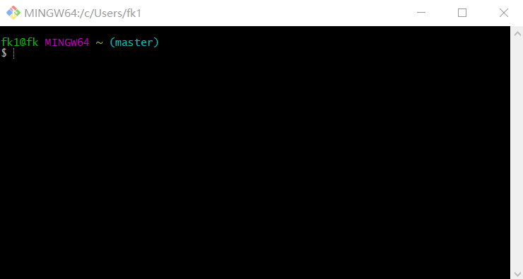
3.2 配置信息
在上图命令行中输入你的用户名与邮箱
$ git config --global user.name "Your Name"
$ git config --global user.email "email@example.com"命令中的 –global 参数表示你这台机器上所有的Git仓库都会使用这个配置。
3.3 Android Studio中配置Git
在Android Studio中点击Settings–>Version Control –> Git，然后在Path To Git executable上输入你刚刚安装Git的位置，最后点击Test按钮出现Git executed successfully说明配置成功，如下图：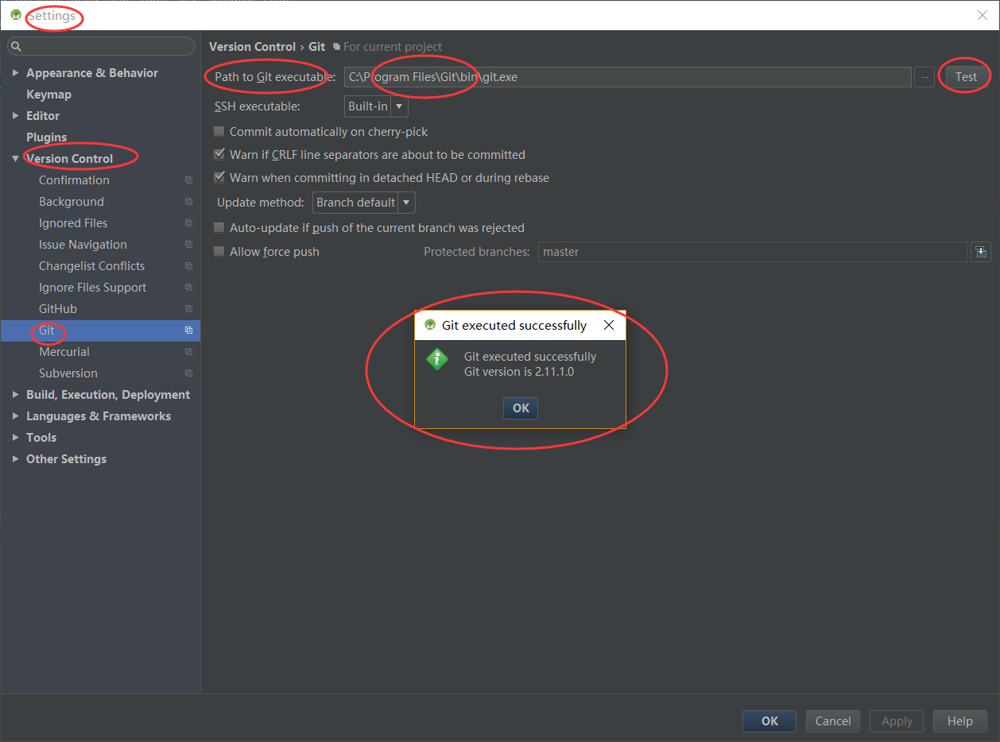
四、GitLab使用
4.1 注册账号
这里说下注册账号的时候需要注意的事项。
如果注册账号的时候提示如下错误
there was an error with the reCAPTCHA,please solve the reCAPTCHA again那是因为注册时需要验证码验证，就是reCAPTCHA，是一个图形验证码。但是这个验证码需要翻Q才能看得到，否则你一直都注册不了。如图：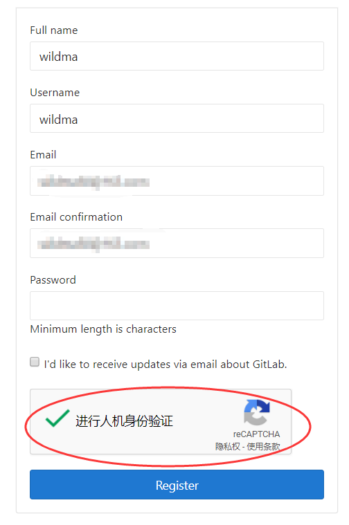
4.2 GitLab账户配置SSH Keys
4.2.1 首先需要检查你电脑是否已经有 SSH Keys
在Git Bash 客户端，输入如下代码：
$ cd ~/.ssh
$ ls如下说明已经存在，存在就可以忽略步骤4.2.2，直接进入步骤4.2.3
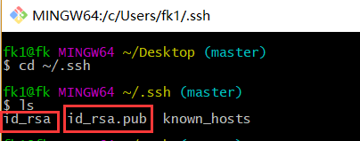
4.2.2 创建一个 SSH Keys
在Git Bash 客户端，输入如下代码：
$ ssh-keygen -t rsa -C "your_email"然后根据提示进行相应操作，如下图所示：
第一个Enter表示Keys存储的位置，默认按回车键即可。第二个和第三个Enter表示Push文件的时候要输入的密码，不需要密码就默认按回车键即可，然后出现如图底部信息就说明创建成功了！
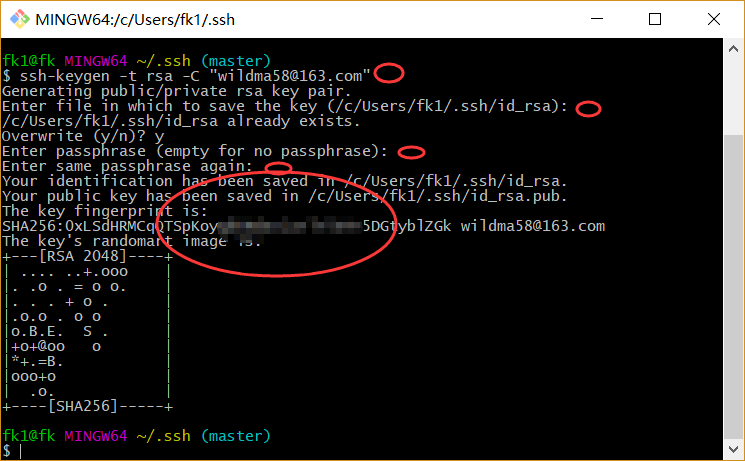
4.2.3 GitLab配置SSH Keys
进入上图所示存储 id_rsa.pub 的文件夹拷贝该文件中的内容，然后登录你的GitLab账号，点击网页右上角的头像–>Settings，点击左边菜单栏的 SSH Keys 进入页面添加 SSH key。如下操作：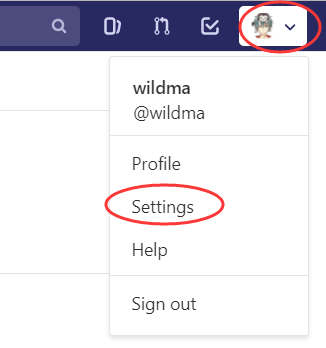
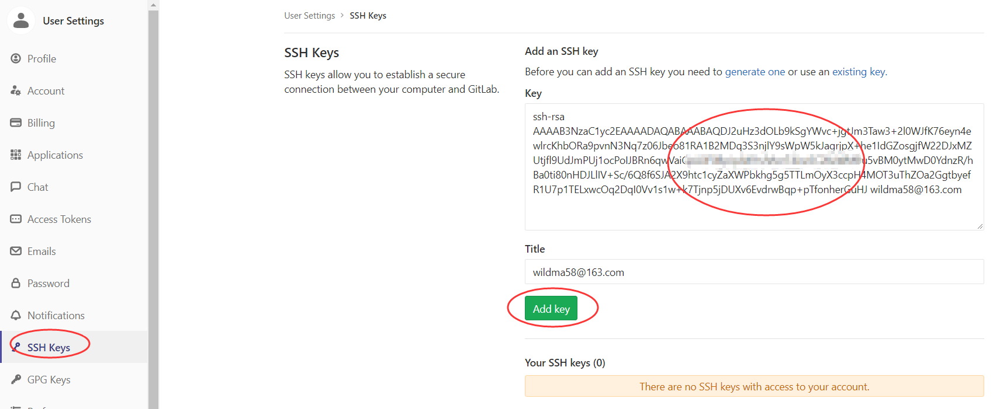
4.3 创建项目
在GitLab网站点击导航条上的 “+” 即可进入创建项目的页面，然后根据提示填写相应信息，如下图：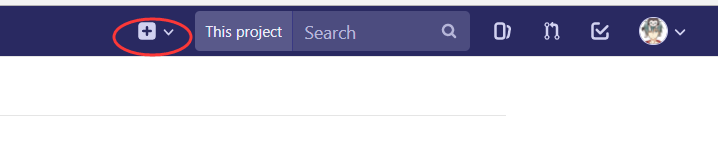
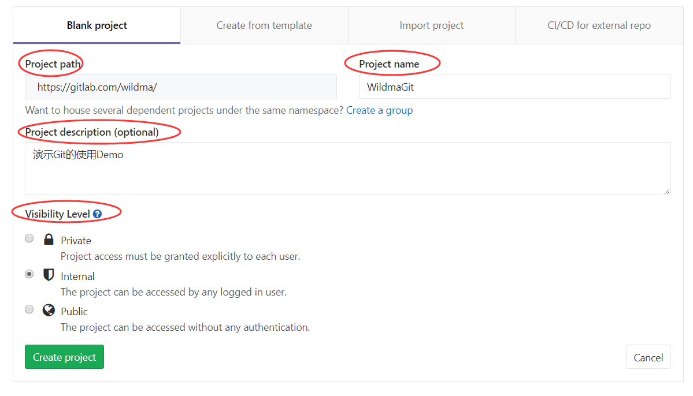
- Project path：项目路径
- Project name：项目名称
- Project description (optional)：项目描述（可选项）
- Visibility Level：可见登记，Private表示私有的，只有你自己或者组内的成员能访问，Internal表示所有登录的用户，Public表示公开的，所有人都可以访问。
创建完成后是这样的：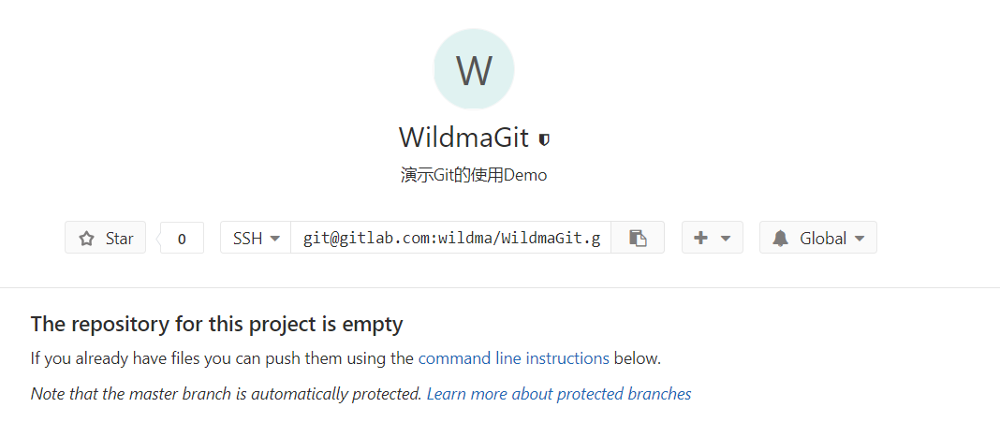
五、Android Studio中使用Git
5.1 将项目上传到GitLab
本地已创建好的项目为WildmaGit
5.1.1 配置忽略文件
Android Studio创建项目后会自动生成.gitignore文件，这个文件可以用来忽略那些不用加入到仓库的文件。项目根目录下与module目录下都会生成该文件，如下：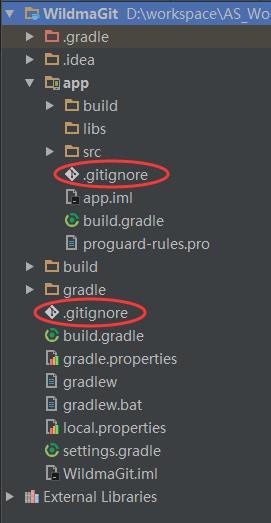
一般情况下我们只需要将项目根目录下的/.idea/workspace.xml与/.idea/libraries改成.idea即可，其他没有特殊要求就用默认的。如下：
修改前：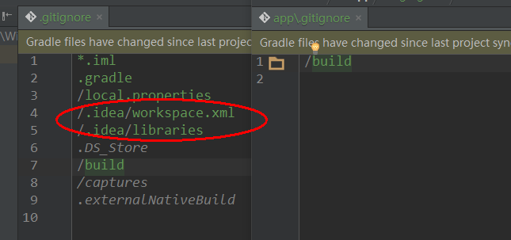
修改后：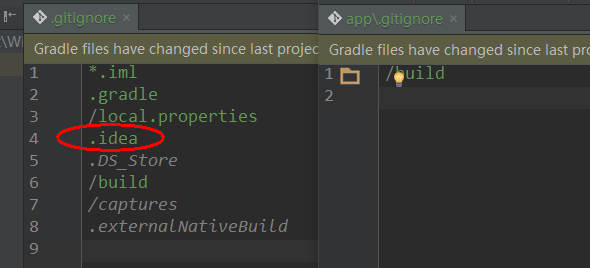
5.1.2 初始化本地Git仓库
点击Android Studio顶部菜单栏上的VCS–>Import into Version Control–>Create Git Repository，如图：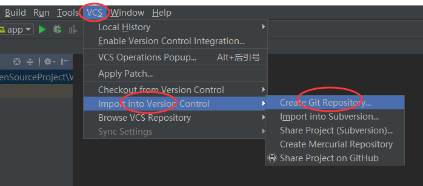
然后选择需要初始化的项目根目录，如图：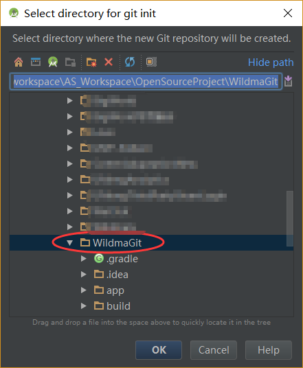
初始化之后发现文件名由原来的白色变成了红色，这表示文件已经被git跟踪了，但是并没有添加到仓库中。如图：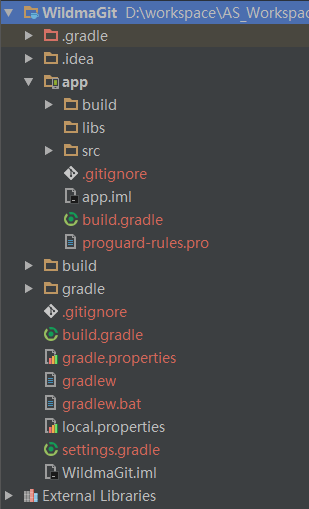
5.1.3 将本地Git仓库已与远程仓库进行关联
打开项目文件夹，在该文件夹中打开Git Bash。输入如下命令后就代表本地Git仓库已与远程仓库进行关联了。
git remote add origin git@gitlab.com:wildma/WildmaGit.git具体步骤见下图：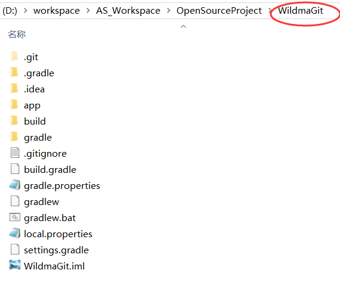
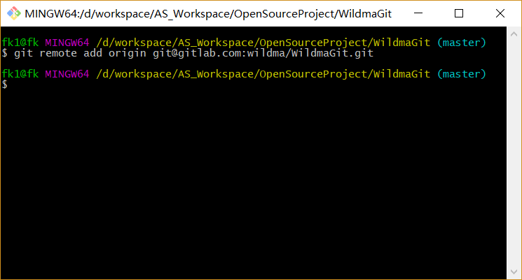
其中 git@gitlab.com:wildma/WildmaGit.git 为我们项目的远程地址，可以到我们前面创建项目中复制，如下：
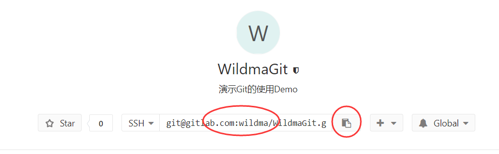
5.1.4 添加文件
选中项目的根目录，点击Android Studio顶部菜单栏上的VCS–>Git–>Add…，如下图：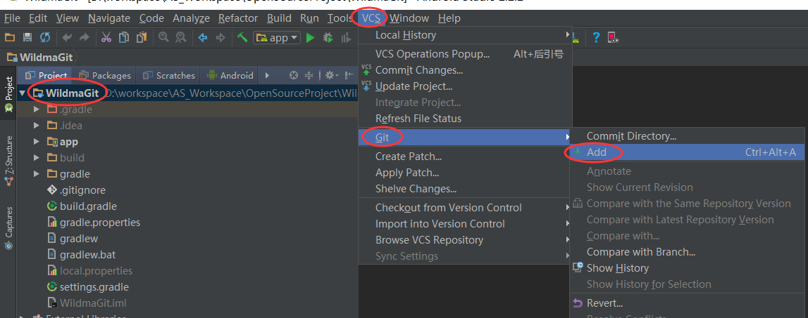
添加文件后发现文件名由原来的红色变成了绿色，说明已经将文件添加进仓库了。如下图：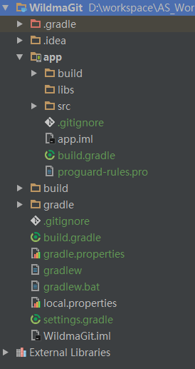
5.1.5 提交文件
每次提交前需要先更新项目，原因是如果是多人合作的项目，需要先将远程仓库中他人提交的最新代码更新到本地仓库。如图：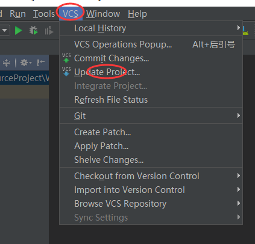
然后选中Merge，点击OK，如果本地代码与远程代码有冲突就会弹出冲突提示，根据需求Merge即可，如图：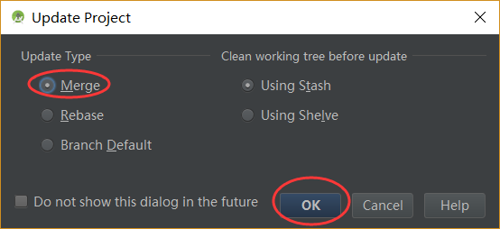
Update后就可以提交文件了，选中项目的根目录，点击Android Studio顶部菜单栏上的VCS–>Git–>Commit Directory…，如图：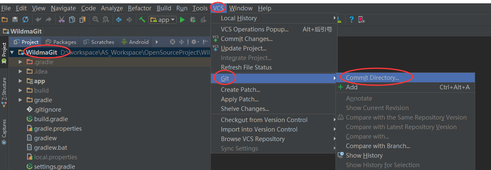
然后会弹出如下提交框，这里可以选择你要提交的文件和填写提交信息，如图：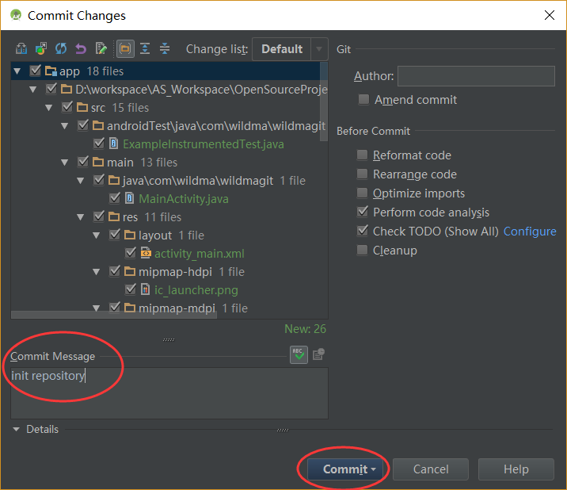
提交文件后发现文件名由原来的绿色又变成了最开始的白色，说明已经将文件提交上仓库了。如图：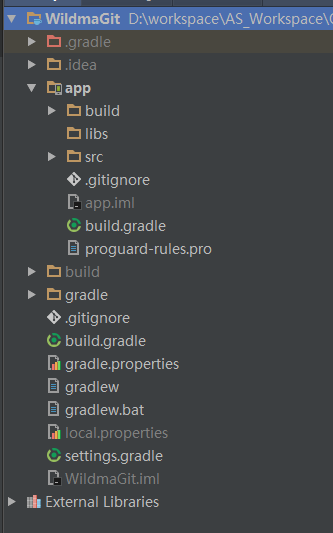
5.1.6 将提交的文件推送到远程仓库
选中项目的根目录，点击Android Studio顶部菜单栏上的VCS–>Git–>Push…，如下图：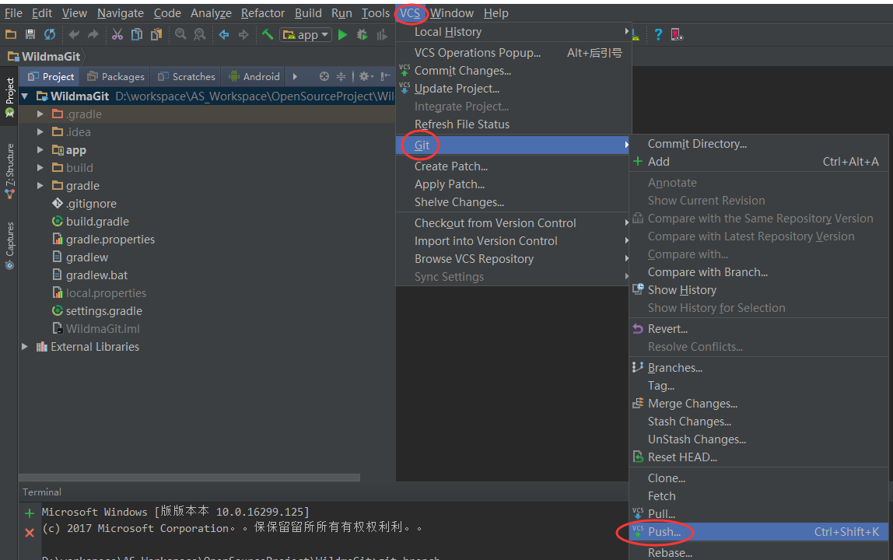
然后会弹出如下推送框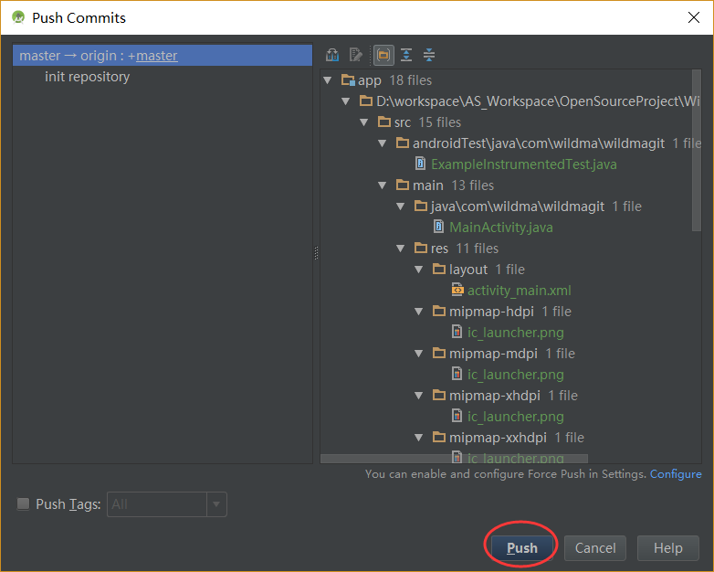
点击Push后，就可以在GitLab上看到刚刚推送的内容了。如下图：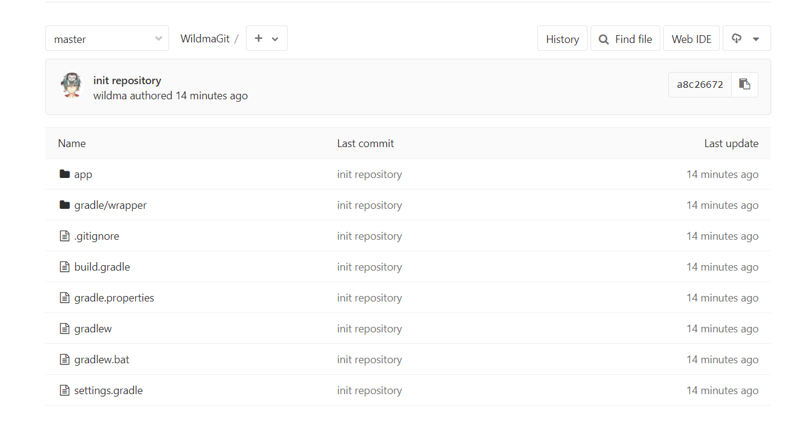
5.2 从GitLab上clone项目
首先到GitLab上复制项目的地址，如图：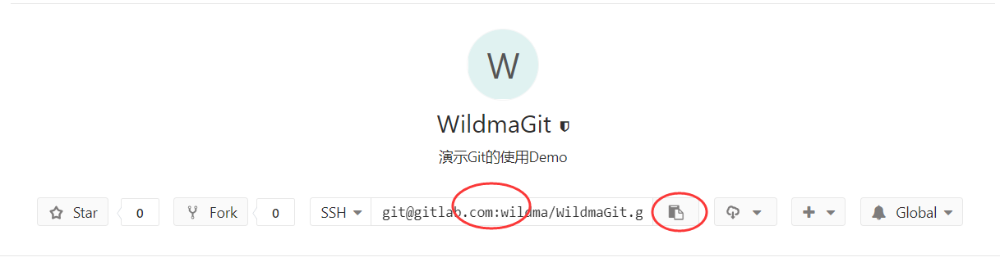
然后点击Android Studio顶部菜单栏上的VCS–>Checkout from Version Control–>Git ，如图：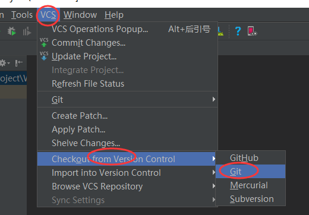
最后填写相应的信息即可，如下图：
- Git Repository URL：填写刚刚复制的项目地址
- Parent Directory：项目路径
- Directory Name：项目文件夹名称
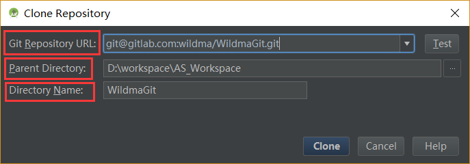
点击clone后，项目就clone下来了！
5.3 分支管理
5.3.1 分支策略
在实际开发中，我们会用到很多分支。这里说下各分支的作用。
- master分支：最稳定的分支，保存需要发布的版本，不在该分支上做任何开发。
- dev分支：开发分支，保存最新的代码，平时开发就在该分支上。当某个版本开发完成后就合并到master分支，然后在master分支进行版本发布。
- bug分支：用来修复bug的分支，一般是线上版出现bug的时候，从master分支创建一个新的bug分支进行bug修复，修复完成合并到master分支和dev分支（保证master分支与dev分支同步），然后删除该bug分支。
实际开发中我主要用到这三个分支，当然每个人都不同，有些人还会细分到功能分支，预发分支。其中master分支与dev分支都需要推送到远程，为了其他成员能共同开发，bug分支则放在本地即可，你自己修复完bug删掉即可。
5.3.2 分支操作
- 创建分支
点击Android Studio顶部菜单栏上的VCS–>Git–>Branches…，如图：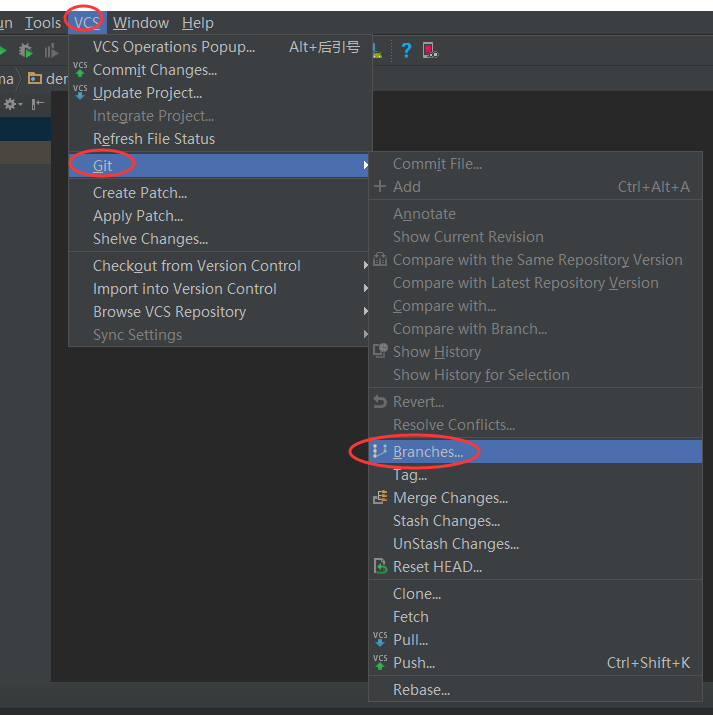
然后选择New Branch，输入分支的名字，例如“dev”，如图：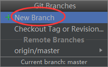
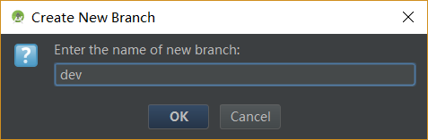
点击OK，分支dev就创建成功了，并且默认切换到该分支。重复上面的步骤可以看到当前分支显示的是dev，如图：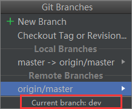
- 推送分支到远程
这时候我们在dev分支上修改内容，然后按照前面说的提交文件（步骤5.1.5），将提交的文件推送到远程仓库（步骤5.1.6）即可。如图：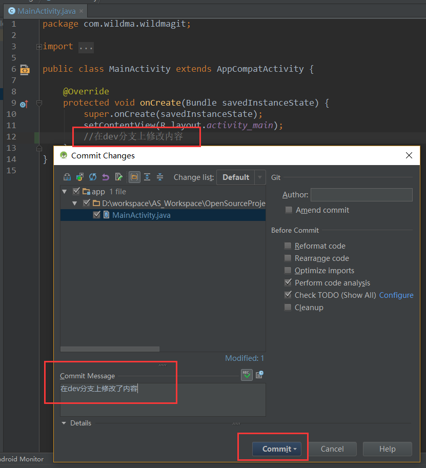 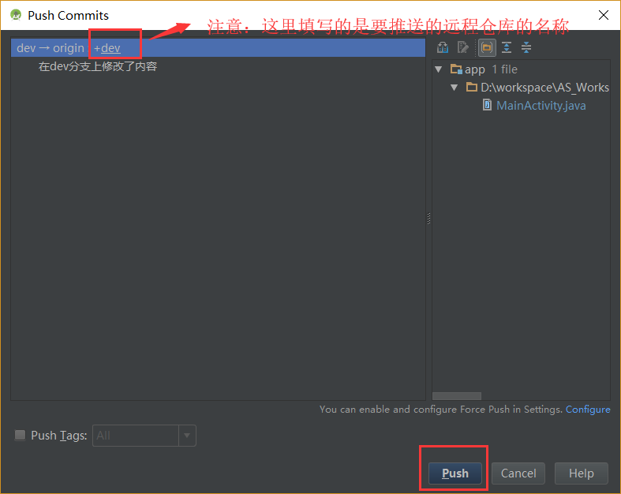
点击push，然后就可以到Gitlab上看到我们刚刚推送的dev分支了，如图：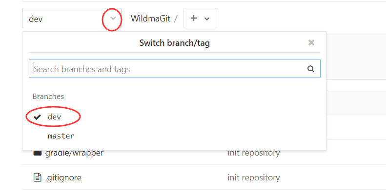
- 切换分支
dev分支上版本V1.0开发完了，需要将代码合并到master上进行发布。因为当前在dev分支，所以需要先切换到master分支，点击Android Studio顶部菜单栏上的VCS–>Git–>Branches…，打开Git Branches窗口，然后选择本地分支栏下的master->origin/master，然后点击Checkout。如图：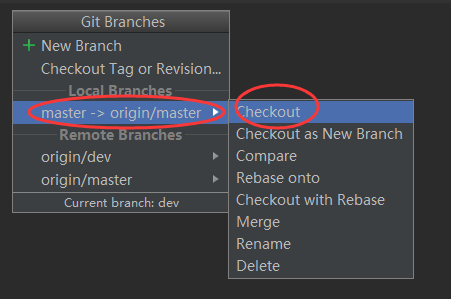
- 合并分支
第三步已经将分支切换到master了，现在进行分支合并。点击Android Studio顶部菜单栏上的VCS–>Git–>Branches…，打开Git Branches窗口，然后选择远程分支栏下的origin/dev，然后点击Merge。如图：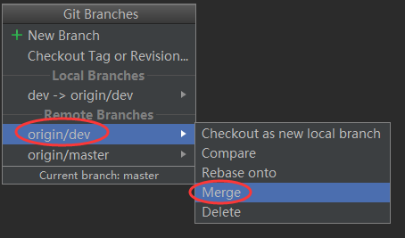
这个时候到GitLab上却发现master分支上并没有合并到dev分支修改的内容，那是因为刚刚只是将远程dev分支的内容合并到本地master分支，本地master分支还没有push到远程，push一下就可以啦~ 如图：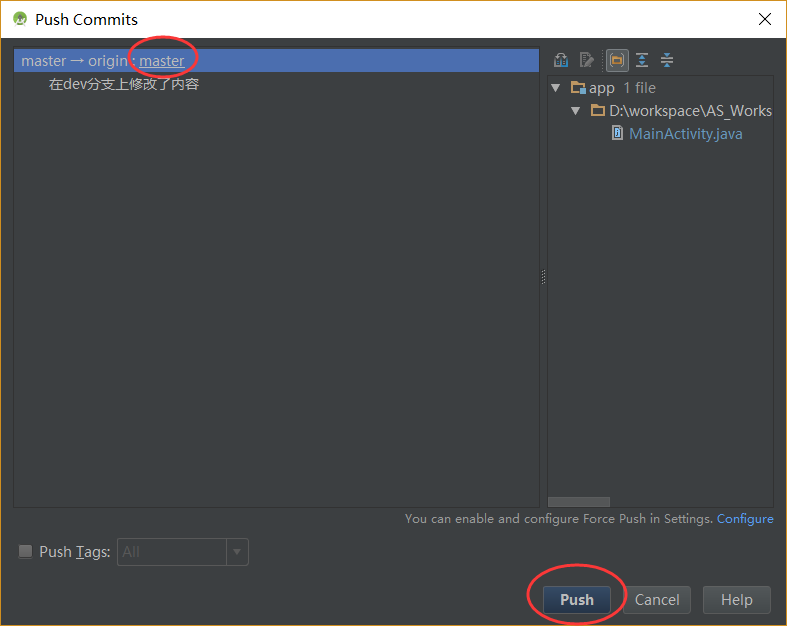
这个时候发现GitLab上master分支与dev分支是保持一致的了。然后将最新的master分支打包发布即可！
- 删除分支
删除本地分支：
点击Android Studio顶部菜单栏上的VCS–>Git–>Branches…，打开Git Branches窗口，选中本地dev分支，选择Delete即可。如图：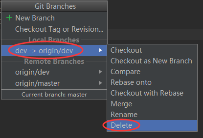
删除远程分支：
点击Android Studio顶部菜单栏上的VCS–>Git–>Branches…，打开Git Branches窗口，选中远程dev分支，选择Delete即可。如图：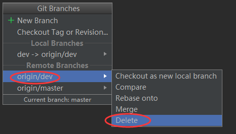
5.4 标签(Tag)管理
标签一般是用于标记某个发布的版本， 例如你发布了版本v1.0，这个时候会打一个v1.0的Tag，主要是方便以后查看和管理某个版本的代码。
- 创建标签
点击Android Studio顶部菜单栏上的VCS–>Git–>Tag…，如图：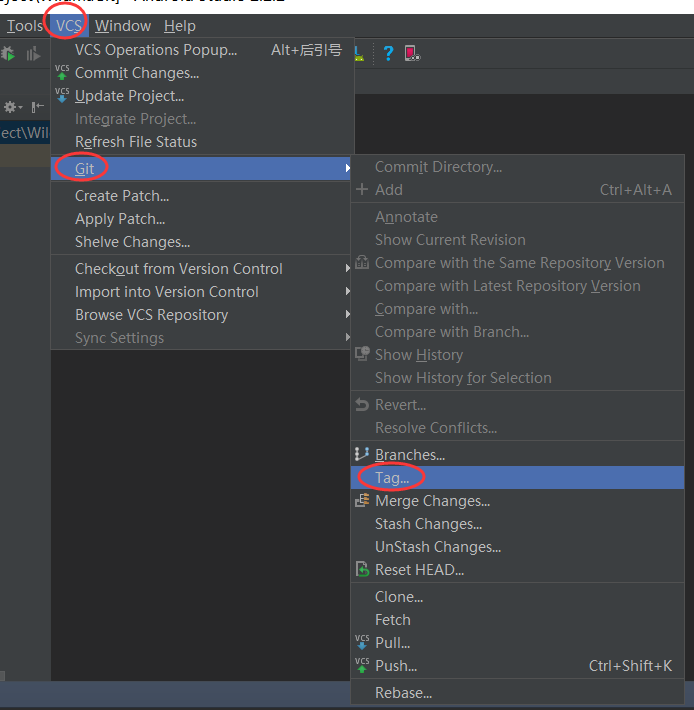
然后填写Tag名称与Tag信息，点击Create Tag即可创建本地标签。其中Commit可填写以前某次提交记录的id，表示在该次提交上打Tag。如果不填表示Tag打在最新提交的commit上。如图：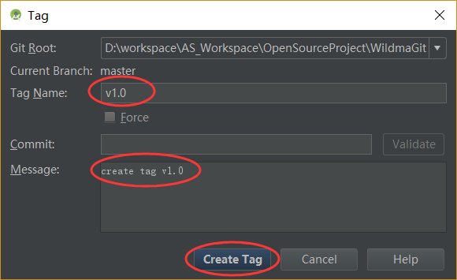
- 推送标签到远程
点击Android Studio顶部菜单栏上的VCS–>Git–>Push…，如图：
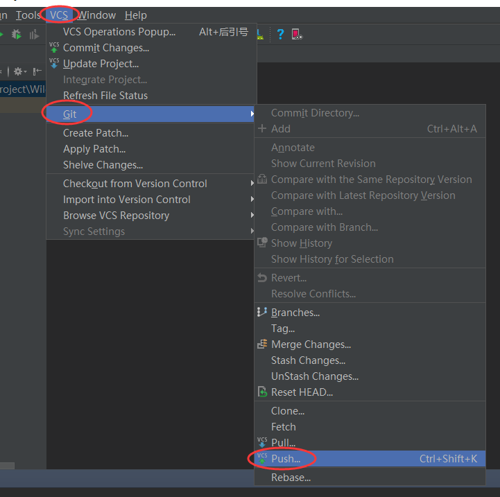
然后弹出Push框，选中Push Tags，点击Push即可推送到远程。如图：
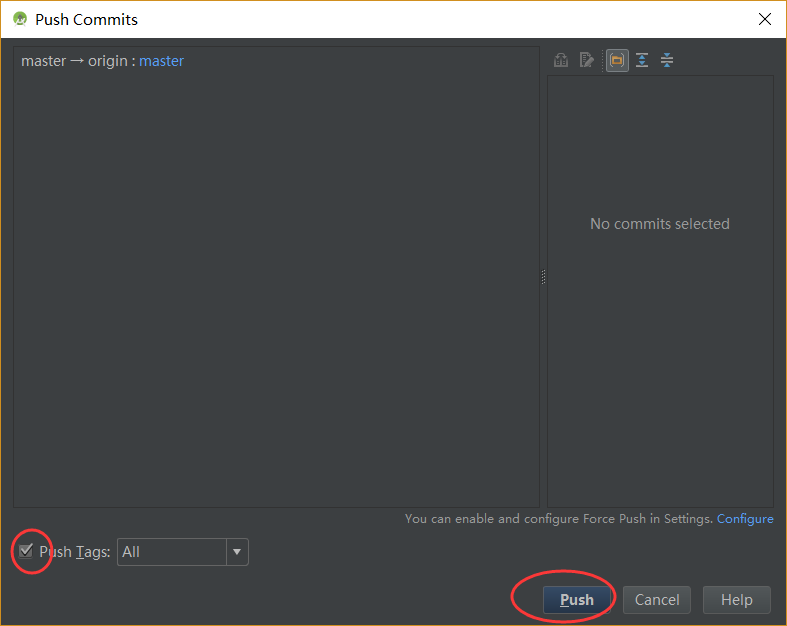
最后到GitLab就可以看到刚刚创建的Tag了，如图：
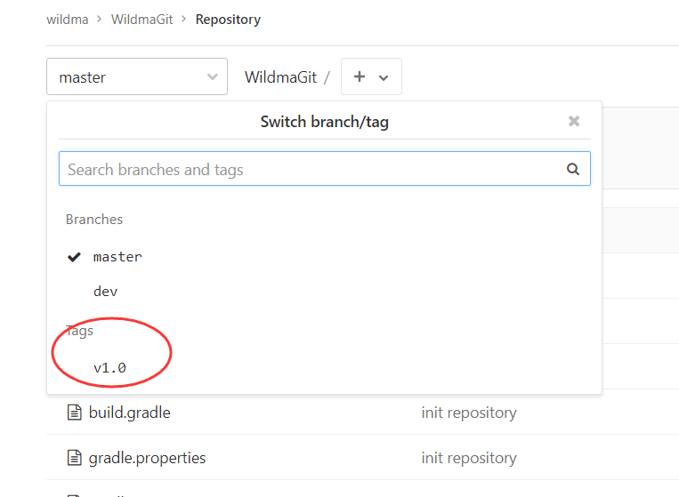
- checkout某个标签的代码
点击Android Studio顶部菜单栏上的VCS–>Git–>Branches…，如图：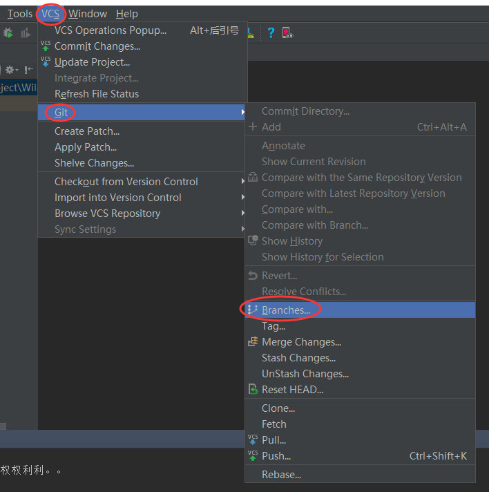
然后选择Checkout Tag or Revision…，最后在弹出的Checkout框中填入Tag的名称即可。如图：
- 删除标签
在Android Studio中没找到删除Tag的操作，所以这里用Git命令。（有发现的小伙伴可以告诉我）
查看本地标签：
git tag删除本地标签：
git tag -d tagName删除远程标签：
git push origin :refs/tags/tagName以上命令需要在Android Studio自带的命令行中输入，如图：
希望这种图文结合的方式大家都能看懂吧！写的不好的地方请多交流~
项目地址：WildmaGit